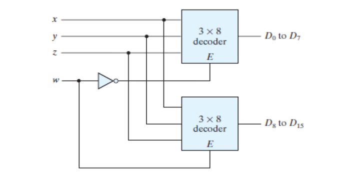
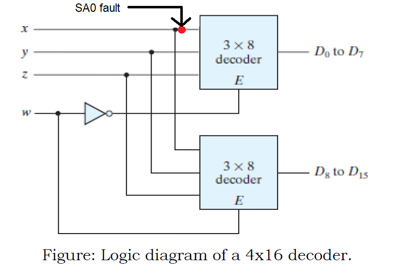
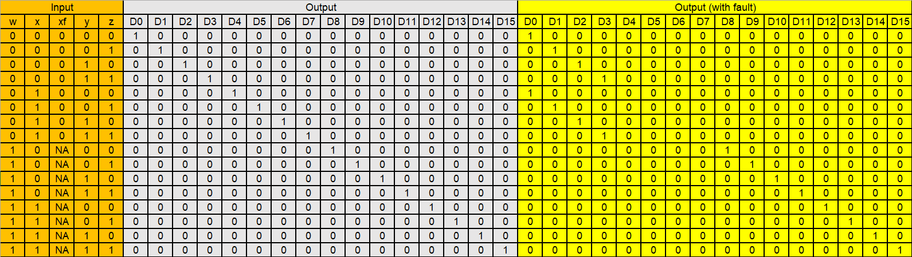
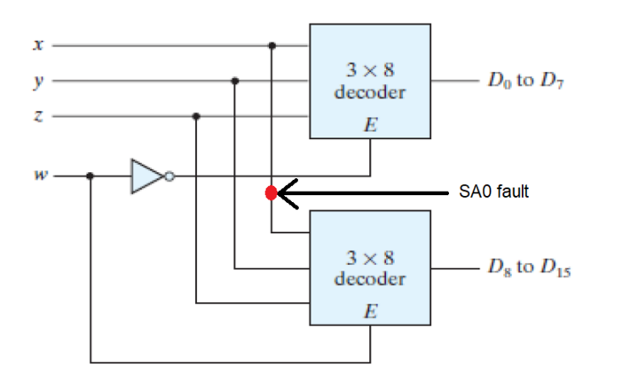
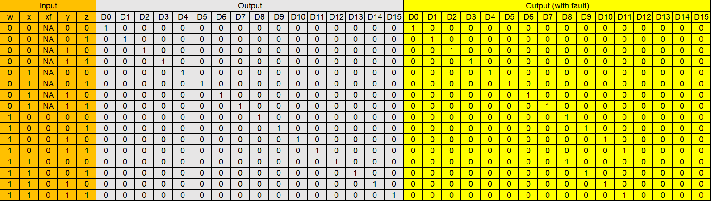
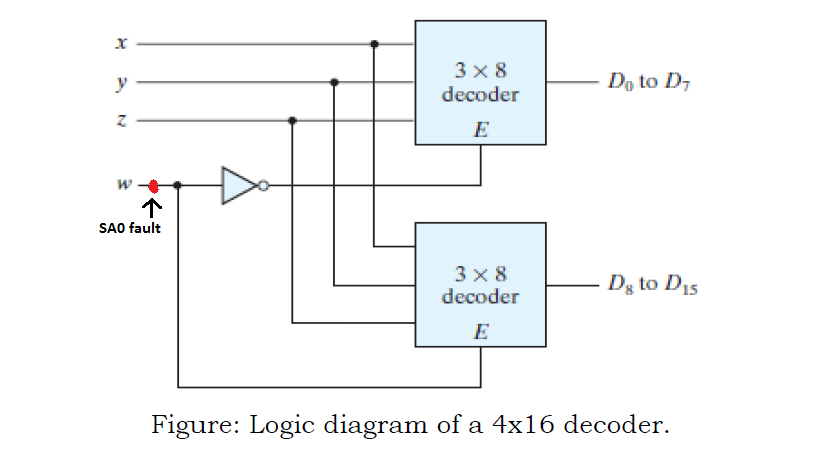
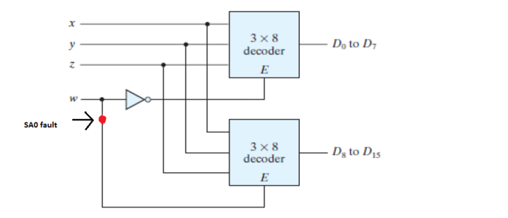
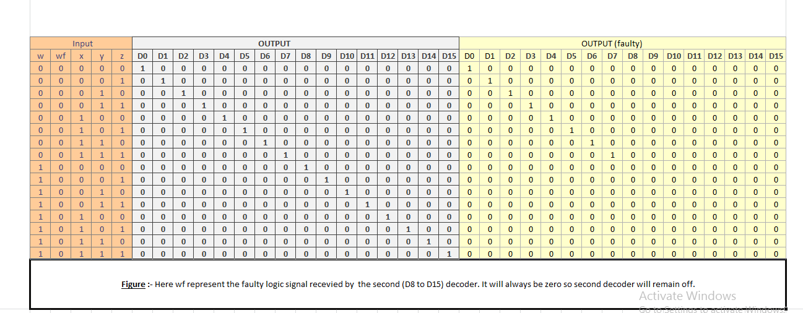

AIM
Detection of the Stuck-at-0 faults (SA0) on the 4x16 decoder constructed with two 3x8 decoders as shown in the image.

THEORY
Stuck-at-fault
A Stuck-at fault (SAF) is a logic-level fault that mimics a manufacturing defect on a digital device, circuits, etc. A Stuck-at-Fault is of two types:
stuck-at-0 (SA0) and stuck-at-1 (SA1) fault. Stuck at faults occur when a line is permanently stuck to Vcc or ground giving a faulty output. This line may
be an input or output to any gate. Also this fault can be single or multiple stuck at faults, Although in this experiment we will only talk about single stuck
at faults.
example of stuck-at-0 :-

example of stuck-at-1 :-

A fault model is an engineering model of something that could go wrong in the construction
or operation of a piece of equipment.
From the model, the designer or user can then predict the consequences of this particular fault.
To detect such fault, a suitable fault model is used.The user deliberately make Vcc or grounded positions and checks output. The user checks all types
of faults that may occur in the circuit.
4-to-16 line Decoder using 3-to-8 line decoder
The parallel inputs x, y & z are applied to each 3 to 8 decoder. The complement of input, w is connected to Enable, E of upper 3 to 8 decoder in order
to get the outputs, D0 to D7. These are the first eight minterms. The input, w is directly connected to Enable, E of lower 3 to 8 decoder in order to get
the outputs, D8 to D15. These are the last eight minterms.

when the w is at logic '0' the above decoder is turned on and gives output (D0 to D7), and when w is at logic '1' the below decoder is turned on and gives output
(D8 to D15).The truth table of the 4 to 16 decoder is as follows :-

Procedure
1. SA0 fault on x input wire
Let us consider the case of a SA0 fault at the position shown below.

When this happens, the value of x is always changed to zero regardless of which decoder is activated. Therefore, the output lines that require x to be 1 will never be high, instead the output line corresponding to the same input with x = 0 will be high. For instance, if we give 1100 as the input, output line D12 should be high in case of normal operation. Since we have a SA0 fault, output line corresponding to 1000 (D8) will be high instead.
The expected as well as obtained truth table are given below:

Now consider the case of a SA0 fault at a slightly different position.

Now, the effects of the fault are visible only when the first decoder is active. If an input activates the second decoder instead, the output is as expected.
When the first decoder is active, the value of x will be changed to 0 regardless of the provided input. Once again, the output lines that require x to be 1 will not be high, instead the output line corresponding to the same input with x = 0 will be high. For example, if we provide 0101 as the input, the output line corresponding to 0001 (D1) will be high.
The truth tables for this case are given below:

Finally, let us consider the SA0 fault to be at the following position.

This case, in a sense, is the opposite of the previous case. If the input activates the first decoder, the output is as expected. The fault only affects the inputs activating the second decoder.
When the second decoder is active, the value of x will be changed to 0 because of the fault. The output lines that require x to be 1 will never be high, since x will be converted to 0. For example, if the input is 1111(D15), the output line for 1011(D11) will be high.
The truth tables for this case are given below:

Note :- SA0 fault on y or z wires will lead to similar cases, with some outputs always being low and other outputs being high for multiple inputs.
2. SA0 fault on w input wire
Case 1 :- When SA0 fault is at the position shown in the figure.

In this case the value of 'w' will always be at logic '0' regardless of it's input values.Therefore, the above decoder(D0 to D7) will always be activated
and the below decoder(D8 to D15) will always be deactivated.So, at the time when we expect output from below decoder (w input value is at logic high) we will see
abnormalities in our circuit.We will see the repetion of the output pattern of above decoder.For instance, say the input is 0001 so the expected output and the
output obtained both will be same i.e. D1,but if the input is 1001 so the expected output is D9 but the obtained output will be D1.
The truth table of this faulty circuit with expected and obtained outputs is shown below:-

Here w is the actual input value and wf (faulty value) represents the value of w changed due to the fault present in the circuit.
Case 2 :- When SA0 fault is at the position shown in the figure.

In this case the SA0 fault in the circuit will be experienced only by the below decoder. For the above decoder the the value of 'w' will be same as the input.
But for the below decoder due to the SA0 fault present the value of 'w' will always be at logic '0' regardless of the input value of 'w'.As 'w' is an enable for below
decoder so the below decoder will remain deactivated.So, at the time when we expect output from below decoder (w input value is at logic high) we get no output from the
circuit, As at that time the above decoder is also deactivated.
For instance, say the input is 0010 so the output obtained both will be same as expected output i.e. D2,but if the input is 1001 so the expected output is D9 but
no output will be obtained in this case, as both of the decoders are deactivated.
The truth table of this faulty circuit with expected and obtained outputs is shown below:-

Here w is the actual input value and wf (faulty value) represents the changed value of w experienced only by below decoder.